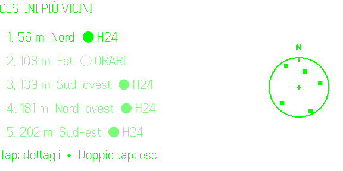
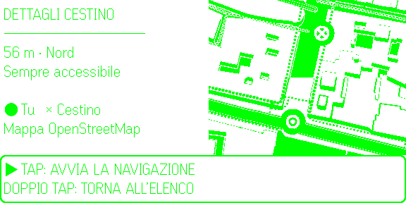
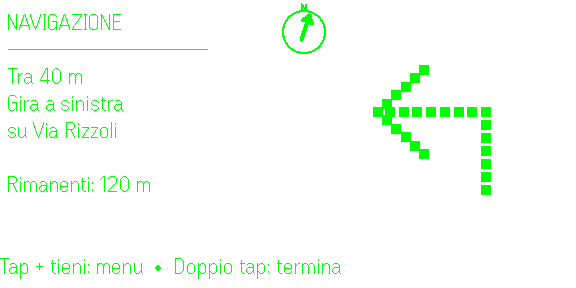

iPhone e iPad
Mappa completa, ricerca nelle vicinanze, indicazioni e modifica collaborativa dei dati OpenStreetMap.
iOS · iPadOS
CestinoQui
CestinoQui è un progetto multipiattaforma per trovare i cestini pubblici mappati su OpenStreetMap, raggiungerli e contribuire a mantenere aggiornati i dati della propria città.
App indipendente: CestinoQui non è affiliata, approvata né rappresenta alcun ente governativo o pubblica amministrazione.
Fonte delle informazioni sui cestini: OpenStreetMap e collaboratori OpenStreetMap.
Esperienze dedicate per iPhone e iPad, Android e gli occhiali Even G2.
Mappa completa, ricerca nelle vicinanze, indicazioni e modifica collaborativa dei dati OpenStreetMap.
iOS · iPadOS
Ricerca, cartografia, Street View, indicazioni e strumenti per contribuire a OpenStreetMap.
Android
Elenco e panoramica dei cestini vicini, dettagli e navigazione pedonale direttamente sugli occhiali.
Even Hub · Italiano · English · Deutsch
CestinoQui G2
La versione Even G2 mostra disponibilità, distanza e direzione dei cestini, una panoramica nord-up e istruzioni pedonali con bussola e simboli dot-matrix.
Versione pubblicata: 0.3.1 · Versione 0.4.0 con lingua tedesca in revisione · Build di prova 0.4.2 con navigazione più stabile e selettore delle tre lingue corretto.


